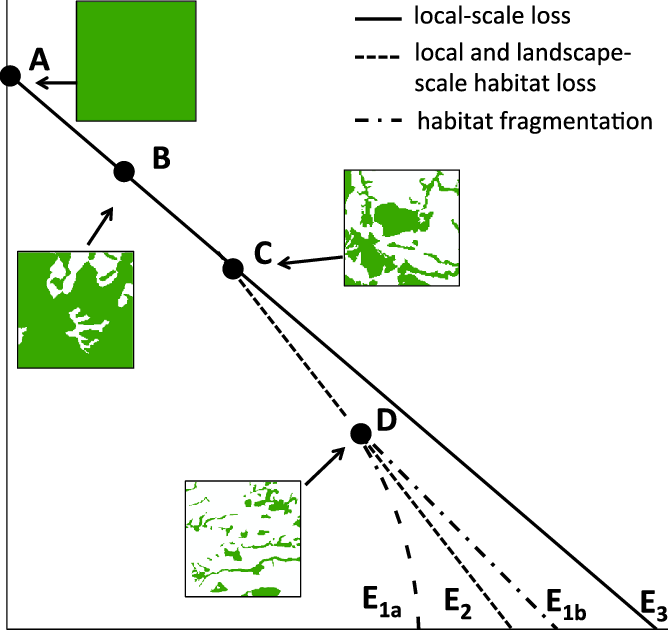
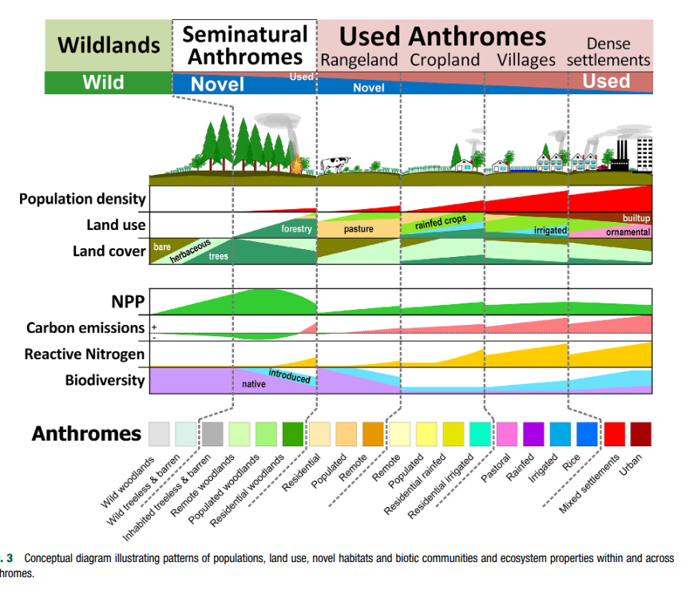
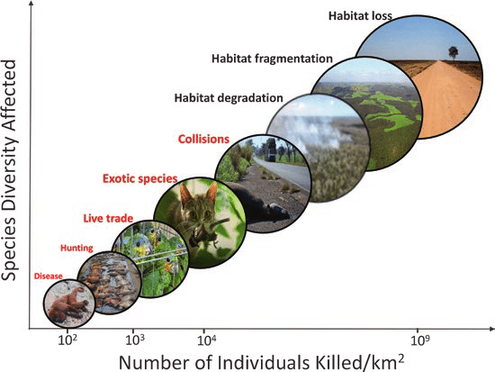
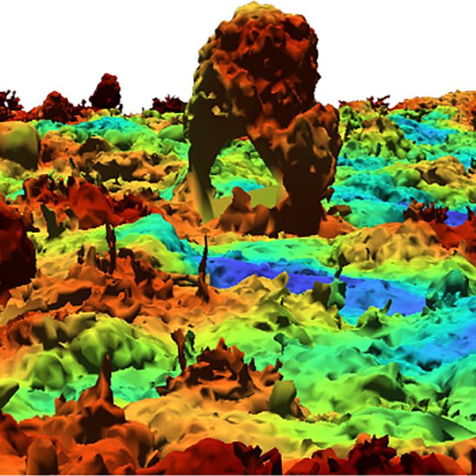
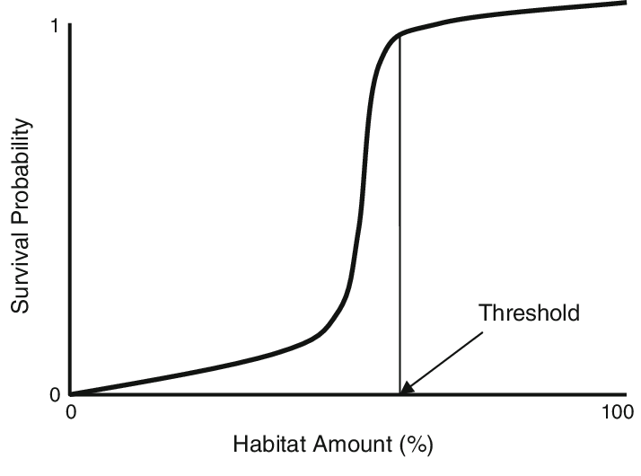
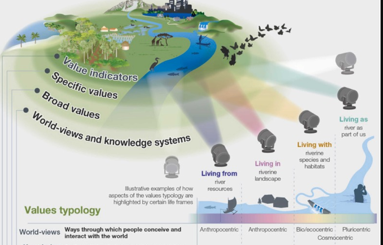
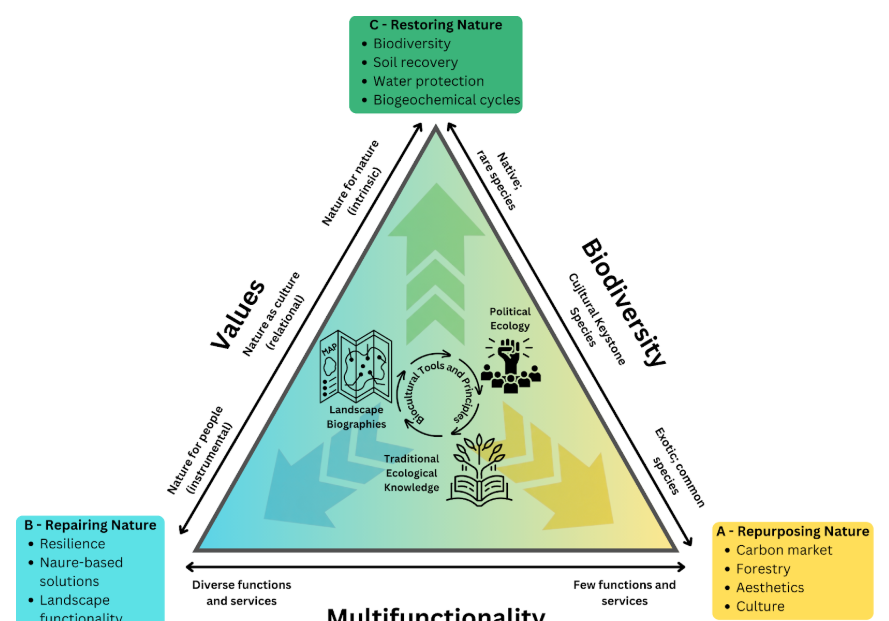
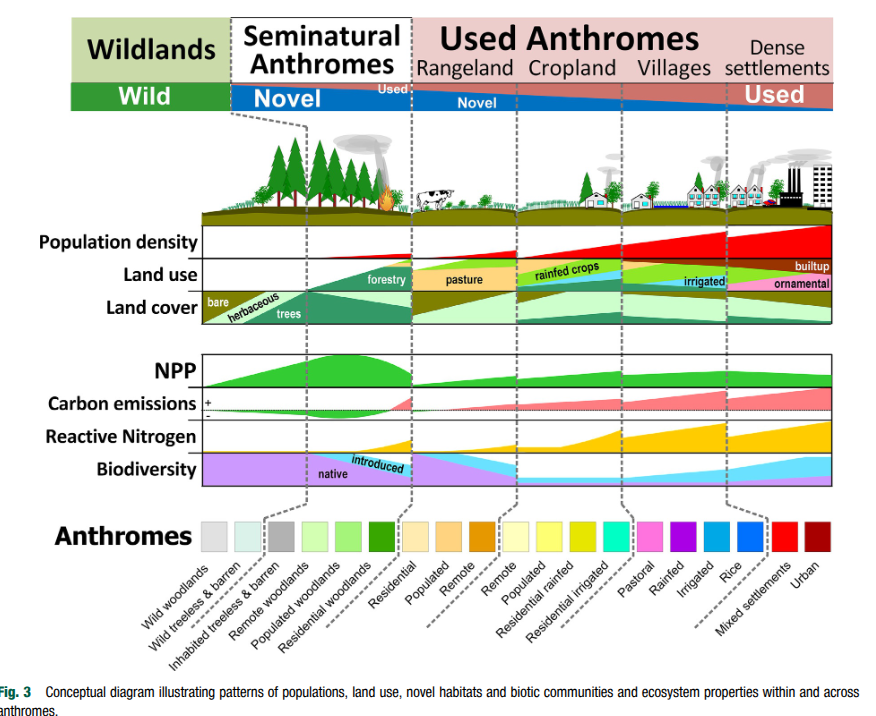

Dinâmica de Perturbação na Ecologia da Paisagem
Implicações para Conservação e Ecologia Política
O Conceito de Distúrbio
- Evento discreto que causa modificação de um sistema
- Altera a disponibilidade de recursos
- Pode ser um evento natural ou de origem antrópica

O Paradigma Padrão-Processo
- O distúrbio é o motor que gera a heterogeneidade espacial
- Afeta a estrutura da paisagem spacio-temporalmente
- Padrões resultantes do distúrbio determinam as funções futuras do ecossistema

Fontes “neutras” de perturbação
- Eventos geofísicos: fogo, tornados e deslizamentos
- Dinâmicas climáticas: enchentes, tempestades e geadas
- Ações bióticas: pragas e desequilíbrios populacionais

Perturbações antrópicas contemporâneas
- Ação humana em escala sem precedentes históricos
- Mudança no uso do solo: agricultura e urbanização
- Infraestrutura linear: estradas e redes de transmissão

Escalas temporais do distúrbio
- Padrões podem ser efêmeros ou permanecer por tempos geológicos
- A “memória” do distúrbio é frequentemente retida na paisagem

Legados e rugosidades
- “Rugosidades”: formas antigas que restam de processos passados
- Paisagens atuais não são estáticas; carregam história embutida
- Mesmo áreas “intocadas” são fruto de decisões humanas históricas

Fragmentação como perturbação
- Divisão de habitats contínuos em manchas menores e isoladas
- Causa perda de conectividade funcional e aumento do isolamento
- Inserção de matrizes antrópicas no mosaico original

O Efeito de Borda
- Ecótono entre manchas perturbadas e remanescentes naturais
- Alterações microclimáticas: maior entrada de luz e vento
- Impacta a estabilidade do interior dos fragmentos

Distúrbios compostos e resiliência
- Interação entre múltiplos distúrbios (ex: seca seguida de fogo)
- Pode levar a sistemas a estados alternativos de degradação
- Desestabilização da capacidade de regeneração natural

Limiares críticos de extinção
- A “regra dos 30%”: a configuração importa mais quando resta pouco habitat
- Perda de conectividade
- Perda de espécies sensíveis

Ecologia Política - Causas da perturbação
- Grandes empreendimentos: mineração, usinas e infraestrutura
- Expansão agrícola voltada para demandas globais
- Conflitos de poder e decisão sobre o uso do território

Ecologia Política - Populações vulneráveis
- Comunidades locais que dependem de ecossistemas estáveis * Insegurança alimentar e escassez hídrica pós-distúrbio
- Populações excluídas dos benefícios da exploração de recursos

Ecologia de estradas e perturbação
Estradas agem como vetores de espécies invasoras e doenças
Causa fragmentação física e mortalidade por atropelamento
Aumenta a capilaridade da interferência humana no território

Percepção do distúrbio
- Diferentes organismos percebem a perturbação em escalas distintas
- Espécies especialistas são as mais impactadas pela mudança estrutural
- O que é matriz hostil para uma espécie pode ser habitat para outra

Gestão Integrada de Paisagens (GIP)
- Conciliar objetivos sociais, econômicos e ambientais
- Conceito de Socio-ecossistemas
- Visão de longo prazo

Restauração no nível da paisagem
- Utiliza o regime de distúrbio como base para recuperação
- Abordagem de “4 Retornos”: natural, social, financeiro e inspiracional
- Restauração da conectividade funcional através de corredores

Conservação e terras privadas
- A maior parte das terras e remanescentes está em mãos privadas no Brasil
- Impossível atingir metas (ex: 30x30) sem engajar proprietários rurais
- Necessidade de mecanismos legais e estímulos para conservação

Crise da biodiversidade e o antropoceno
- Interferência humana atingindo escala de força geológica
- Declínio drástico (70%) de populações de vertebrados desde 1970
- Ecologia de paisagem como resposta científica a essa crise

Conclusão: planejar para a ação
- A escala da paisagem é a escala de ação do homem no seu meio
- Mudar o paradigma: o homem é parte integrante do sistema, não perturbador externo
- Planejar a paisagem como um todo para garantir sustentabilidade